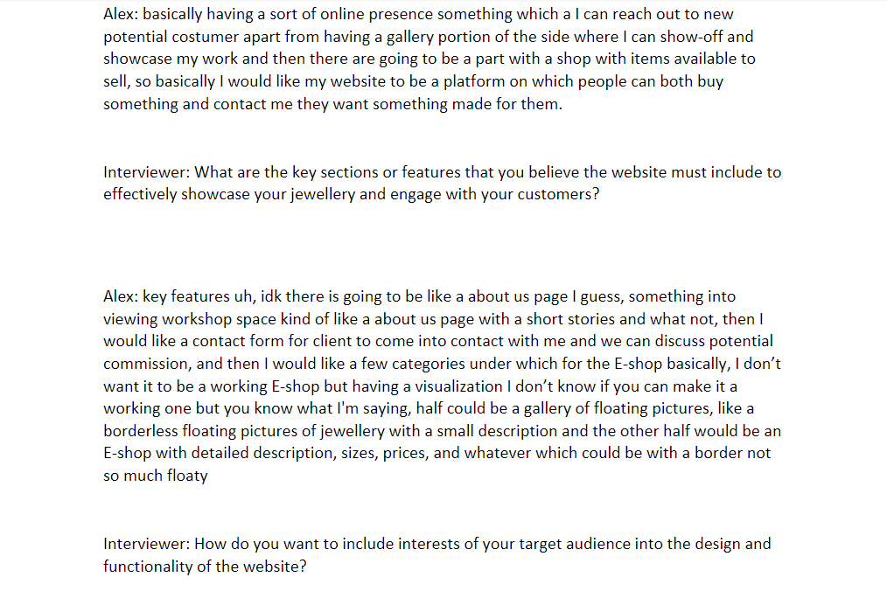
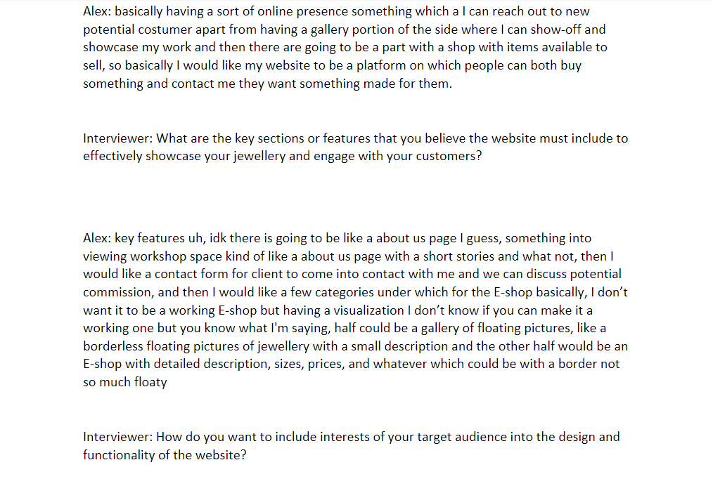

Professional Skills
 

Interviews
To create the website we had to create Interviews to understand who is the User and our Target Audience so we can create Personas. We created
Interview Questions where we asked the User what do they about the jewellery when and why do they buy the jewellery and so on. Each of us had to create
his own Interview so I did one myself with the Bulgarian 20 year old student Martin. That Interview helped me to create my own persona and User Scenario
so that we and our client can better understand who is our target audience.
The Interview Questions we made and Interviews we conducted belong to the Learning Outcome
Research because we used DOT framework in order to create correct questions for the Users. I also was opened to making an Interview and helping our group to create accurate
Personas to understand who is our target audience. Apart from that we also made an interview with our stakeholder Alex where we asked him some questions how he would like
to see his website, what should be included, what colour pallet we should use and what are the examples we can use.
Proof Link:Interviews